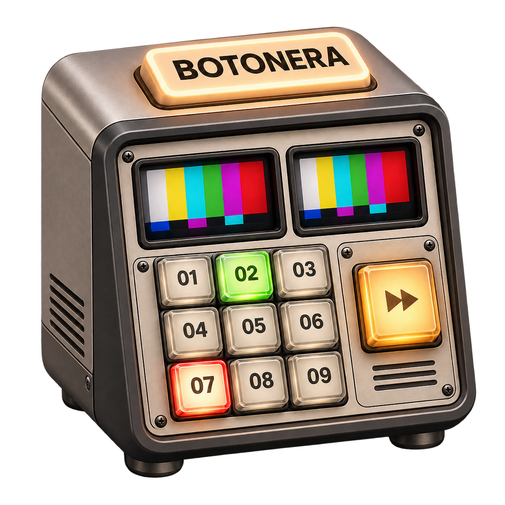
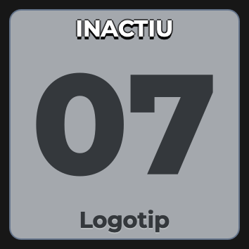

Tu propia cuadrícula
Decide columnas y filas. Ajusta el tamaño o deja que los botones se adapten al espacio, siempre cuadrados.
La escena, el gráfico, la transición… todo pasa a la vez. Pon los controles que utilizas en una botonera a tu medida. Y deja de perseguir ventanas.
Software libre · Sin hardware adicional

Botonera es un plugin nativo para OBS Studio. Reúne las escenas que eliges, los gráficos del DSK y las transiciones en un único panel visual. Lo preparas a tu gusto y pasas a realización.
Qué hace
No hace falta incluir todas las escenas. Elige las que utilizas y dale a cada tecla una imagen, una etiqueta y un atajo.
Decide columnas y filas. Ajusta el tamaño o deja que los botones se adapten al espacio, siempre cuadrados.
Arrastra una imagen sobre una tecla. Queda integrada en la botonera, sin preparar sus dimensiones.
Asigna un atajo a cada botón. En configuración ves las combinaciones que has preparado.
Luz cálida en directo, pulsación en previo y los marcos rojo y verde. El número siempre está visible.
Elige el tipo, los milisegundos o un preset. Después pulsa TRANSICIÓ para pasar a programa.
Reordena arrastrando, edita con clic derecho y entra en realización para proteger la distribución.
La interfaz
La misma botonera en tres momentos: cuando trabajas, cuando la preparas y cuando personalizas una tecla.
Escenas y elementos seleccionados a la izquierda. Tipos de transición, tiempos rápidos y presets a la derecha. En modo estudio, eliges el previo y después ejecutas la transición.
Capturas de la interfaz Qt del plugin, en catalán y con datos de demostración.
Flujo de uso
En OBS, ve a Paneles (Docks) → Botonera y colócala donde te vaya mejor.
Elige la cuadrícula, asigna escenas y DSK, añade imágenes y atajos. Arrastra para ordenar.
El clic derecho permite pasar de configuración a realización y proteger los botones.
En modo estudio, selecciona la escena de previo. Elige transición y tiempo, o un preset, y pulsa TRANSICIÓ.
Downstream Keyer
Un botón para el logotipo, el rótulo del invitado o el marcador. Un clic lo muestra y el siguiente lo oculta, con el efecto configurado en Downstream Keyer.
Necesitas Downstream Keyer de Exeldro. La botonera controla su selección; no sustituye al complemento.

Ejemplo interactivo hecho con capturas. Esta página no controla tu OBS.
Para quién es
Si haces de cámara, técnico de sonido y realizador a la vez, buscar un control no debería ser un cuarto trabajo.
«El invitado ya habla. Tú todavía buscas la escena.»
Cambia de plano teniendo claro qué está en previo y qué sale en directo.
Ten a mano los planos, los vídeos y los rótulos de los invitados.
Prepara las escenas que vas a utilizar, con transiciones y gráficos en el mismo sitio.
Organiza el control con ratón o teclado, dentro del propio OBS.
Descarga
Versión de prueba 0.2.6. Cierra OBS, instala el plugin y vuelve a abrirlo. Lo encontrarás en Paneles (Docks) → Botonera.
Estado de la versión: macOS revisado durante el desarrollo. Windows compilado y paquetes verificados, pendiente de la primera ejecución en un PC. Los instaladores no tienen firma comercial ni notarización de Apple.
No. Es una cuadrícula de botones dentro de OBS, controlada con el ratón o los atajos de teclado. La máquina del icono es la ilustración del proyecto.
Guarda un tipo de transición y una duración. Al pulsarlo, prepara esos valores; después pulsas TRANSICIÓ para ejecutar el cambio. El preset no pasa a programa por sí solo.
Sí. La cuadrícula, los botones, las imágenes y los atajos se guardan con la colección de escenas. También puedes exportar e importar la botonera con las imágenes integradas.
Cuando comienza una grabación o transmisión, la botonera entra en realización. Después puedes volver manualmente a configuración para cambiar algo.
Downstream Keyer instalado y las composiciones añadidas a sus canales. Con TIE activo, la botonera bloquea la acción de ese canal. DSK es independiente del previo y de la transición principal.